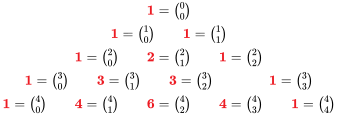
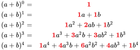

3 Algebra
3.1 Arithmetic operations
Reference: Hass, Heil, and Weir (2018)
- \(a(b + c) = ab + ac\)
- \(\cfrac{a}{b} + \cfrac{c}{d} = \cfrac{ad + bc}{bd}\)
- \(\cfrac{a}{b} \times \cfrac{c}{d} = \cfrac{ac}{bd}\)
- \(\cfrac{a / b}{c / d} = \cfrac{a}{b} \times \cfrac{d}{c}\)
3.2 Laws of signs
Reference: Hass, Heil, and Weir (2018)
- \(-(- a) = a\)
- \(\cfrac{-a}{b} = - \cfrac{a}{b} = \cfrac{a}{-b}\)
3.3 Zero
Reference: Hass, Heil, and Weir (2018)
Division by \(0\) is not defined.
- \(\text{If} \ \ \ a \ne 0: \cfrac{0}{a}\)
- \(a^{0} = 1\)
- \(0^{a} = 0\)
- For any number \(a\): \(a \times 0 = 0 \times a = 0\)
3.4 Laws of expoents
Reference: Hass, Heil, and Weir (2018)
- \(a^{m} a^{n} = a^{m + n}\)
- \((ab)^{m} = a^{m} b^{m}\)
- \((a^{m})^{n} = a^{mn}\)
- \(a^{m / n} = \sqrt[n]{a^{m}} = (\sqrt[n]{a})^{m}\)
3.5 The binominal theorem (Newton’s binomial)
Reference: Hass, Heil, and Weir (2018) and Khan Academy (n.d.) and Matika (n.d.)
For any positive integer \(n\),
\[ (a + b)^{n} = a^{n} + na^{n - 1}b + \cfrac{n (n - 1)}{1 \cdot 2} a^{n - 2}b^{2} + \cfrac{n (n - 1) (n - 2)}{1 \cdot 2 \cdot 3}a^{n - 3}b^{3} + \cdots + nab^{n - 1} + b^{n} \]
The same formula above can be written as
\[ (a + b)^{n} = \sum_{k = 0}^{n} \binom{n}{k} \cdot a^{n - k} \cdot b^{k} \quad , \quad \binom{n}{k} = \cfrac{n!}{k! (n - k)!} \]
- Example:
\[ (a + b)^4 = a^{4} + 4a^{3}b + 6a^{2}b^{2} + 4ab^{3} + b^{4} \]
In the case of \((a - b)\),
\[ (a - b)^{n} = \sum_{k = 0}^{n} \binom{n}{k} \cdot a^{n - k} \cdot (- b)^{k} \]
Note that when the power of \(− b\) is even, the product is positive and if the power is odd, the product is negative.
- Example:
\[ (a - b)^4 = a^{4} - 4a^{3}b + 6a^{2}b^{2} - 4ab^{3} + b^{4} \]
See the “special products” section for more examples.
3.6 Pascal’s triangle
Reference: Wikiversity (n.d.)


3.7 Factoring the difference of like integer powers, \(n > 1\)
Reference: Hass, Heil, and Weir (2018)
\[ a^{n} - b^{n} = (a - b)(a^{n - 1} + a^{n - 2}b + a^{n -3}b^{2} + \cdots + ab^{n - 2} + b^{n - 1}) \]
See the “special products” section for examples.
3.7.1 Special products
Reference: Hass, Heil, and Weir (2018)
- Square of a sum: \((a + b)^{2} = a^{2} + 2ab + b^{2}\)
- Square of a difference: \((a - b)^{2} = a^{2} - 2ab + b^{2}\)
- Square of 3 terms sum: \((a + b + c)^{2} = a^{2} + b^{2} + c^{2} + 2ab + 2ac + 2bc\)
- Cube of a sum: \((a + b)^3 = a^{3} + 3a^{2}b + 3ab^{2} + b^{3}\)
- Cube of a difference: \((a - b)^{3} = a^{3} - 3a^{2}b + 3ab^{2} - b^{3}\)
- Sum of cube: \(a^{3} + b^{3} = (a + b)(a^{2} - ab + b^{2})\)
- Difference of cube: \(a^{3} - b^{3} = (a - b)(a^{2} + ab + b^{2})\)
- Quad of a sum: \((a + b)^4 = a^{4} + 4a^{3}b + 6a^{2}b^{2} + 4ab^{3} + b^{4}\)
- Quad of a difference: \((a - b)^4 = a^{4} - 4a^{3}b + 6a^{2}b^{2} - 4ab^{3} + b^{4}\)
- Product of a sum: \((x + a)(x + b) = x^{2} + (a + b)x + ab\)
- Product of a sum and a difference: \((a + b)(a - b) = a^{2} - b^{2}\)
3.8 Completing the square
Reference: Hass, Heil, and Weir (2018)
If \(a \neq 0\), then
\[ ax^{2} + bx + c = au^{2} + C \quad \left (u = x + \cfrac{b}{2a} \ , \ C = c - \cfrac{b^2}{4a} \right ) \]
3.9 The quadratic formula
Reference: Hass, Heil, and Weir (2018)
If \(a \neq 0\) and \(ax^{2} + bx + c = 0\), then
\[ x = \cfrac{-b \pm \sqrt{b^2 - 4ac}}{2a} \quad \left (\Delta = b^2 - 4ac \right ) \]